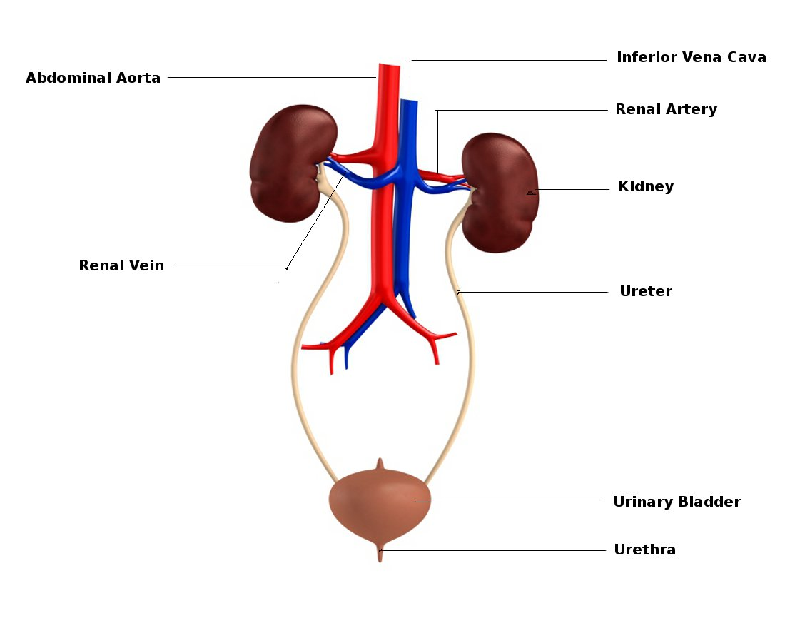

Biology
Excretion In Humans
Excretion
- Excretion - removal of waste products of the metabolism from the body
- Metabolism - sum of the chemical reactions of a cell
1. How is Excretion different from egestion
- Egestion - removal of undigested food from alimentary canal through the anus. Does not come from the cells
2. Main Excretory Substances
- Carbon Dioxide - waste product of cellular respiration. Excreted in the air that is exhaled
- Water - waste product of cellular respiration in all cells and consumed through food. Excess water is excreted in urine and sweat
- Bile Pigments - produced by the breakdown of haemoglobin. Takes place in the liver and excreted in faeces
- Urea - produced in the liver from excess proteins that are consumed. It is transported in the blood to the kidneys and excreted in urine
3. Deamination
- In the liver the amino group (NH2) and another Hydrogen are removed from the excess amino acid molecules to form ammonia (NH3).
The ammonia is then combined with carbon dioxide to form urea
The Urinary System
- Urinary System consists of two kidneys, two ureters, the bladder and the urethra.
- The renal artery and vein are associated with the urinary system
1. Functions of the Urinary System
- Excretion of nitrogenous waste substances (urea, uric acid and creatine)
- Osmoregulation by regulating water content of bodily fluids
- Regulate salt content of bodily fluids
- Regulate pH of bodily fluids
2. Structure of the Urinary System
- Kidneys are surrounded by fat for insulation and to keep the in position
- Each kidney is 10cm long, 5cm wide, and 3cm thick
- Ureter carries urine from kidneys to the bladder
- A sphincter muscles control the opening of the bladder
- 